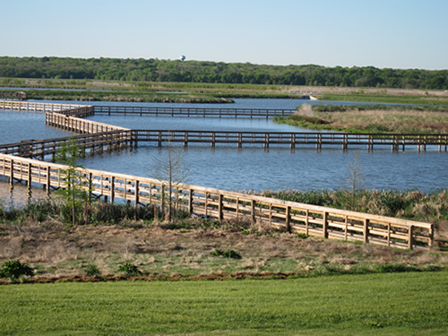

Designated Trails and Access Points
What is it?
Trails and walkways provide access through riparian zones and to streams while maintaining bank stability, protecting riparian vegetation, and protecting wildlife habitat integrity. Trails can simultaneously provide economic and recreational benefits, maintain habitat integrity, and provide opportunities for conservation education through trail signs. Elevated walkways are constructed trails made from materials like wood or metal. Light-penetrating walkways are a popular form of this walkway because it does not prohibit plant growth.
 Elevated walkway at John Bunker Sands Wetland Center (photo from TPWD)
Conservation Benefits
- Protect bank and riparian vegetation
- Prevent bank and soil erosion
- Protect fish and wildlife habitat
- Directs recreational activity in riparian area and stream to prevent widespread damage
- Protects aestetic aquality of riparian area
- Provide opportunity to promote conservation issues with trail signs
What does it include?
Trails can utilize riparian and floodplain areas in high flood risk areas creating a recreational benefit in protected riparian areas. Trails can be made of a variety of materials depending on the region, intended usage, and desired amount of maintenance. Technical experts should be consulted to determine
- Locations that would minimize impact to sensitive or imperiled species or habitats
- Appropriate materials and design
- Areas that would minimize soil disturbance and erosion
- Appropriate stream access points for recreational activities (fishing, kayaking, bird watching, etc)
- Aesticially pleasing areas to locate view overlooks
Designated Trails and Access Points Links
- Signage (p. 78; Alaska Dept. Fish and Game)
- Soil erosion and trail recreation (p. 103; USDA and US Forest Service)
- Streambank Revegetation and Protection (p.79 - 83; Alaska Dept. Fish and Game)
- Trail design and wildlife (p. 101; USDA and US Forest Service)
- Trails along riparian corridors (p. 103; USDA and US Forest Service)
- Trail user preferences (p. 104; USDA and US Forest Service)
- Trail layout (p. 103; USDA and US Forest Service)
- Trail access and useage (p. 106; USDA and US Forest Service)
Designated Trails and Access Points Bibliography
- Weiner. 1998. Kenai River restoration and Management. Fisheries 23: 6-10.